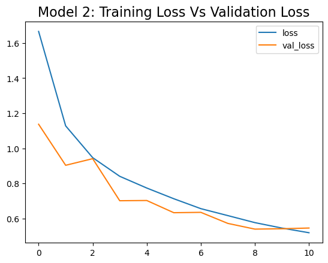
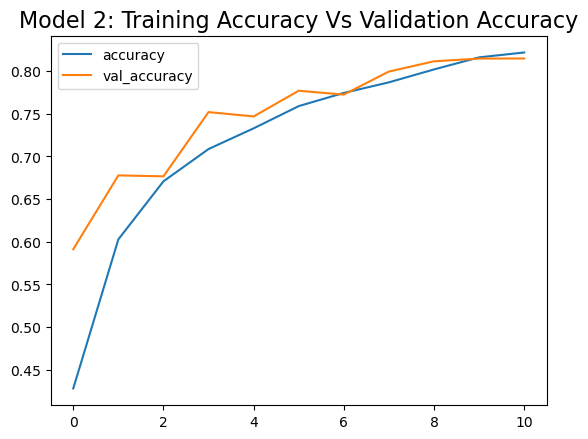
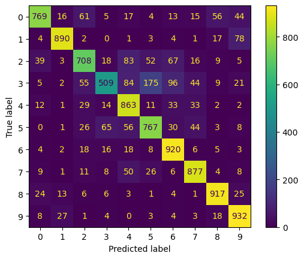

To measure the performance of our model we can check one of the following metrics
Loss value: This is the value returned by the loss function used during training.
Accuracy: This is the number of correctly predicted instances divided by the total number of instances.
Using the previous model, let's review how well it performed.
After training, we can have access to the model metrics that allows us to analyze its performance. These metrics look as follows (Castro & Castro, 2023).
index
loss
accuracy
val_loss
val_accuracy
0
1.666417
0.428000
1.137422
0.5912
1
1.128188
0.602775
0.903420
0.6777
2
0.946897
0.670750
0.941154
0.6766
3
0.840693
0.708575
0.701448
0.7519
4
0.773848
0.732850
0.702769
0.7468
5
0.712827
0.758900
0.633178
0.7769
6
0.656293
0.774350
0.635225
0.7724
7
0.616626
0.786750
0.572124
0.7994
8
0.576608
0.801875
0.539617
0.8114
9
0.545574
0.816025
0.541707
0.8146
10
0.519021
0.821750
0.545851
0.8147
Model metrics after training (Castro & Castro, 2023)
Each of the rows is an epoch. We can observe that it has a loss, accuracy, val_loss and val_accuracy. The first two columns (loss and accuracy)
correspond to the training set and the following two (val_loss and val_accuracy) to the validation set, that contains unseen data. We can plot
those values to analyze how well the model is performing in the validation dataset.

Training loss vs Validation loss (Castro & Castro, 2023).

Training accuracy vs Validation accuracy (Castro & Castro, 2023).
From the figures avobe, we observe that the model is behaving as expected. Training and validation loss values look similar, which is a sign of low overfitting.
Additionally, the accuracy values in both datasets look similar as well. We can interpret that as a good ability of our model to generalize well on unseen data,
which is a sign of low overfitting (Castro & Castro, 2023).
Confusion matrix
Another technique we can use to visualize the performance of our model is the confusion matrix.

Confusion matrix (Castro & Castro, 2023).
The figure above displays all the correctly classified values in the main diagonal. All other values are incorrectly predicted values.
The values in the x-axis are the predicted values and those in the y-axis are the true labels. For eample, values at (5, 3) means that there are
175 instances inscorrectly classified as class 5 when they are from class 3.